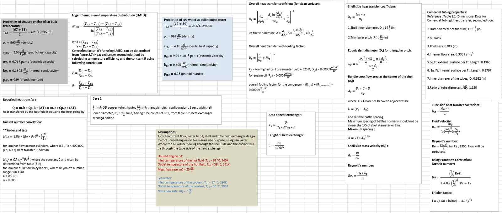
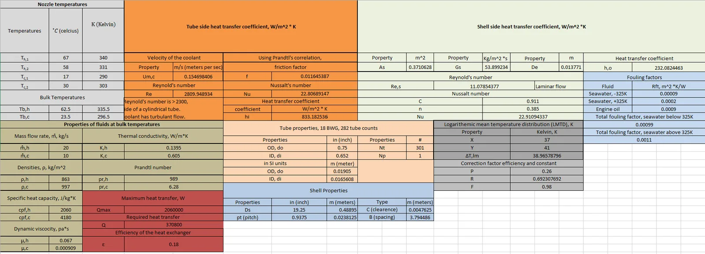

The calculation chain
Fluid conditionsFlow and temperatures
Heat dutyEnergy balance
Heat transferConvection and fouling
Required sizeArea and tube length
Working through the assumptions

Comparing surface conditions
The worksheets carry the thermal assumptions into calculations for the overall coefficient, area, and tube length. Repeating that calculation with fouling resistance shows how the surface condition changes the required size.

Checking the calculation before reusing it
The archived sheets contain conflicting coolant flow inputs and inconsistent labels in parts of the comparison. I have kept them as original coursework and identified the inputs that need reconciliation before presenting a final sizing recommendation.